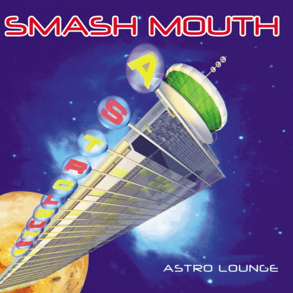

“Somebody once told me, the world was going to row me, I ain't the smartest tool in the shed.”
Are these lines from one of the most enduring songs of the 90s? Or are they a sacred text from the occult teachings of hermetic alchemy?
My answer is both. Tonight, I'd like to talk to you about the hidden, mystic significance of Smashmouth. and I know I only have few minutes of your time, but that's fine. This will be quick, because it is obvious.
The basic idea of Hermetic alchemy is that we are all made of two basic elements: Light and Sound. This is also the basic idea of every Smashmouth song. Both tell us that human beings are simply light condensed into matter, and through ritual we can change the light that radiates from us and thus change the world around us. But the first step is being made aware that we are all light. Or, to paraphrase “All Star”: we’ll never shine if we don’t first glow.
Let's take a closer look at this song as it is filled with occult references. The chorus is “Hey now, you’re an all star.” you are made of star. They make the alchemy even more explicit later when they say, “All that glitters is gold.” This is an important point. It is not just humans that are all stars. It is everything. Everything is made of the same original element, but in different forms. The ground we walk on is no different than the sun that lights our way. It is all star stuff. As above, so below. Or to put another way, “we might as well be walking on the sun.”
Now, I am like a lot of you, in that I only know two Smash Mouth songs, so I bought their album to dig a little deeper. I was blown away by what I found
First , notice the cover.
A neon-lit hotel floating off a rock in space...he idea of this is absurd! Mod hotels and outer space don’t go together, yes, but..60’s surf rock usually doesn’t go with 90’s So-Cal raprock. Smashmouth's intent is to unify opposing elements. Their cover art, then, works as a psychedelic. It upsets the senses, and in your new vulneerable state you can hear the message more clearly.
And the message? It's hidden in the title of the album. Astro Lounge. Literally: relaxation in light.
~*~
We've discussed the surface level of this album, but let’s take a look at their track listings and deeper cuts.
Track 1:All star. (Smart, start with the single.)
Track 2: Baphomet Speaks.
Track 3: The Emerald Tablet of Hermes Trismegistus.
Track 4: To Lay with Endymae the Ethereal (The Handclap Song)
Track 5: Black Mass, Pt 1.: The gathering
Track 6: Black Mass, Pt. 2: renunciation
Track 7: Black Mass, Pt 3: initiation
Track 8: A really good cover of “Can’t Get Enough of you Baby”
Track 9: Black Mass, Fin: our Golden Unity
When you listen to the whole album, it all seems obvious. And, in this light, we can now see the lead singer of Smash Mouth, Steve, as a modern mystic leader, wearing all the signs of the enlightened. He is rotund like buddha. The tips of his hair are frosted, to form a halo on his head, the bleached ends looking like a flame that floats above him. He wears sunglasses all the time to show that he does not need these eyes, for he does not see out of them. He sees out of that one located in the center of your forehead.
Unfortunately, while Smashmouth is a source of good vibes and endless party, there is still an evil in this world. Mystery schools do not house just the holy. There is a dark evil in this world, bands enriched by the occult arts, whose only intent is obfuscate and close us off from this holy clarity. Which brings me to why I am really here. I want to talk about Third Eye Blind.